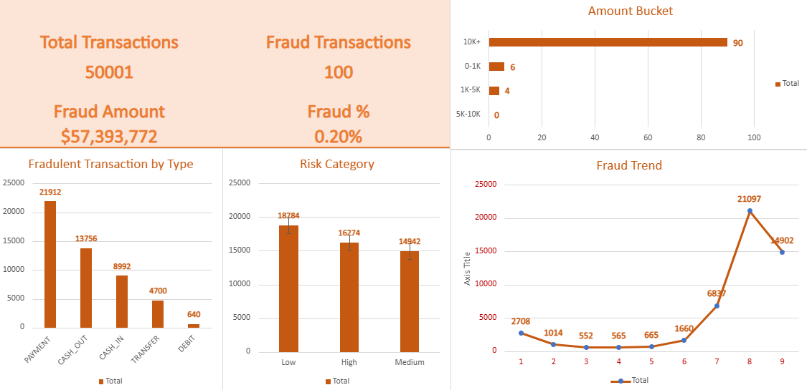

Microsoft Excel (Online) | Pivot Tables | Risk Analytics | Fraud Detection

The organization was experiencing increasing financial risk due to undetected fraudulent transactions. There was no centralized system to monitor transaction patterns, identify anomalies, or classify high-risk activity. This made it difficult to proactively prevent fraud and ensure financial security.
Fraud activity was not random and showed clear patterns linked to transaction type and value. Certain high-value transactions had a significantly higher likelihood of being flagged as suspicious. A small number of transaction categories contributed disproportionately to total fraud cases. Early detection of abnormal transaction behavior can significantly reduce financial exposure.
• Fraud Detection Rate (%)
• Total Fraudulent Transactions Identified
• High-Risk Transaction Volume
• Total Monetary Loss Prevented
• Average Transaction Value of Fraud Cases
• Category-wise Fraud Distribution
Microsoft Excel (Excel for Web), Pivot Tables, Pivot Charts, Data Cleaning, Data Analysis